Principales versiones de Windows a través de los años
1985: Windows 1.0
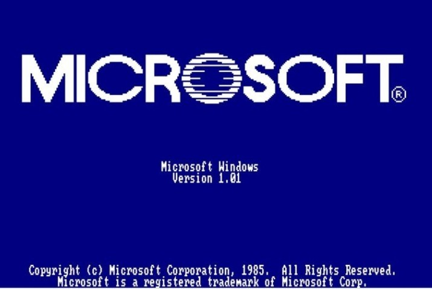Microsoft Windows 1.0 (en realidad 1.01) fué el primer entorno gráfico desarrollado por Microsoft Corporation y lanzado el 20 de noviembre de 1985. Fue el primer intento de Microsoft de implementar un ambiente operativo multitarea (aunque con limitaciones) con interfaz de usuario gráfica en la plataforma de PC. No era un sistema operativo real, sino un entorno gráfico que funcionaba encima de DOS
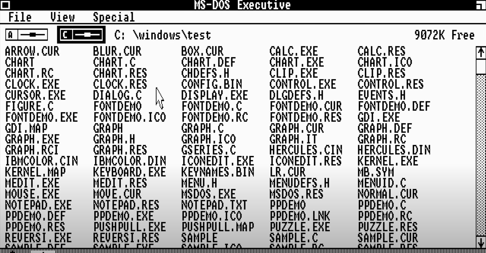Este producto data de 1981, se realizó cuando Microsoft inició un proyecto llamado Interfaces Manager, cuya idea original le corresponde a Bill Gates y se basó en una aplicación de interfaz gráfico de usuario denominada VisiON. El nombre original del proyecto fue visto como muy poco comercial, por lo cual se terminó desechando, y siendo reemplazado por el nombre de Microsoft Windows. Fue presentado al público de manera oficial el 10 de noviembre de 1983. En la caja azul se anunciaba un PC con la interfaz gráfica de Windows, con varias ventanas pegadas unas a otras. La estrategia de venta de Microsoft para Windows era proporcionar un nuevo ambiente de desarrollo y un nuevo entorno de software en el que se utilizan imágenes de mapa de bits y un ratón, liberando así al usuario del método MS-DOS que consistía en escribir comandos en el indicador del disco (C:\)
1987: Windows 2.0

Windows 2.0, precisamente Windows 2.03 es una versión del entorno operativo obsoleto creado por Microsoft con una interfaz gráfica de usuario de 16 bits, que fue lanzado el 9 de diciembre de 1987 y es el sucesor de Microsoft Windows 1.0. Microsoft Windows 2.0 fue continuado con las posteriores ediciones 2.1x , más conocidas como Microsoft Windows/286 y Microsoft Windows/386, extendidas para los procesadores 80286 y 80386, quienes a su vez fueron reemplazados por Microsoft Windows 3.0 en mayo de 1990; no obstante, Windows 2.0 recibió actualizaciones y soporte por parte de Microsoft durante catorce años hasta el 31 de diciembre de 2001, cuando dejó de recibir soporte técnico.
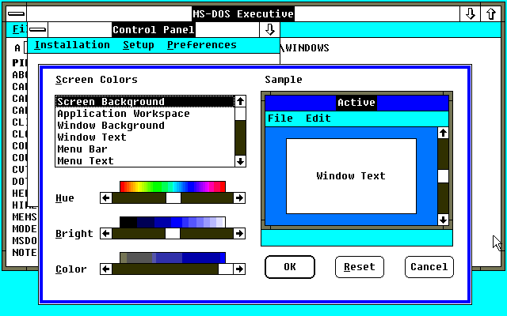Windows 2.0 permitía, por primera vez, a las ventanas de aplicación superponerse entre sí; a diferencia de su predecesor, Windows 1.0 , el cual podía mostrar solo las ventanas en mosaico vertical y horizontal. Windows 2.0 también introdujo más sofisticados métodos abreviados de teclado (y la terminología de "Minimizar" y "Maximizar", en contraposición a "iconize" y "Zoom" en Windows 1.0). La configuración de ventanas que presentaba este sistema duraría inclusive con la introducción de Windows 3.1. Al igual que Windows 1.x, las aplicaciones de Windows 2.x no pueden ejecutarse en Windows 3.1 o sistemas posteriores, ya que no fueron diseñados para el modo protegido .
1993: Windows NT
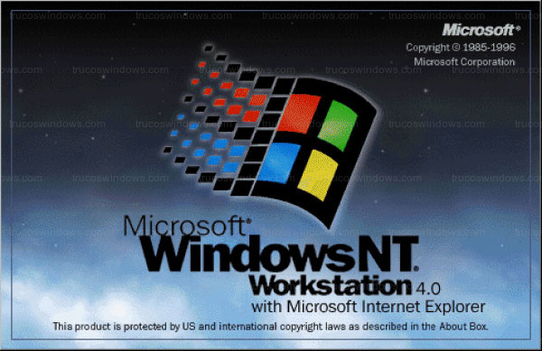Windows NT (Windows New Technology) es una familia de sistemas operativos producidos por Microsoft, de la cual la primera versión fue publicada en julio de 1993. Previamente a la aparición de Windows 95 la empresa Microsoft concibió una nueva línea de sistemas operativos orientados a estaciones de trabajo y servidor de red. Un sistema operativo con interfaz gráfica propia, estable y con características similares a los sistemas de red UNIX. Las letras NT provienen de la designación del producto como "Nueva Tecnología" (New Technology). A partir de Windows 2000, "NT" se eliminó del nombre del producto y solo se incluye en la cadena de versión del producto junto con varios lugares de bajo nivel dentro del sistema.
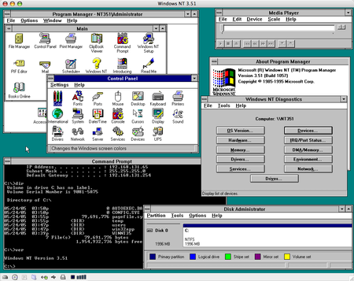Windows 3.0 sucedió a Windows 2.1x e incluyó una interfaz de usuario significantemente mejorada, además de incluir varias mejoras técnicas para hacer un mejor uso de las capacidades de administración de memoria de los procesadores 286 y 386 de Intel. Ahora los programas en modo texto pueden ejecutarse en una ventana — una característica disponible de forma más limitada en Windows/386 2.1x — haciendo el sistema usable como base multitarea para programas heredados. Sin embargo, esto tenía un uso muy limitado en el mercado doméstico, donde la mayoría de juegos y programas de entretenimiento seguían usando MS-DOS.
1995: Windows 95
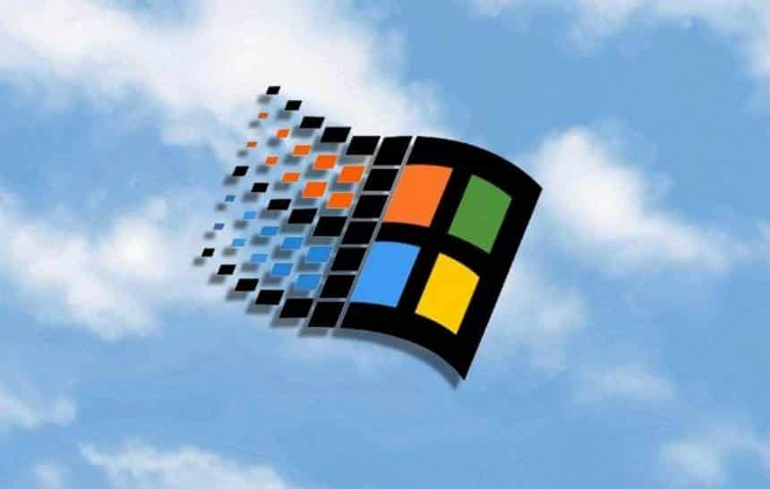Windows 95 es un sistema operativo descontinuado y obsoleto con interfaz gráfica de usuario híbrido de entre 16 y 32 bits. Fue lanzado al mercado el 24 de agosto de 1995 por la empresa de software Microsoft con notable éxito de ventas. Durante su desarrollo se conoció como Windows 4 o por el nombre clave Chicago. Sustituyó a MS-DOS como sistema operativo y a Windows 3.x como entorno gráfico. Se encuadra dentro de la familia de sistemas operativos de Microsoft denominada Windows 9x. En la versión OSR2 (OEM Service Release) incorporó el sistema de archivos FAT32, además del primer indicio del entonces novedoso USB.
Windows 95 fue lanzado al mercado el 24 de agosto de 1995 por Microsoft. En esta edición se introdujeron mejoras que eran muy significativas con respecto a sus antecesores entre los cuales se pueden mencionar los profundos cambios realizados a la interfaz gráfica de usuario de Windows, siendo completamente distinta a las de versiones anteriores, y el pasar de usar una arquitectura multitarea cooperativa de 16 bits a usar una arquitectura multitarea apropiativa de 32 bits.
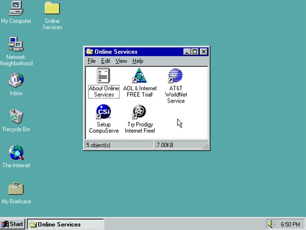Esta versión fue la primera en incluir la barra de tareas y el botón Inicio, los cuales se siguieron incluyendo en versiones posteriores de Windows, además de ser la primera versión en soportar la función de Plug and Play, y, solo en Japón, una de las últimas versiones para PC-9821. El lanzamiento de Windows 95 estuvo acompañado por una extensa y millonaria campaña de marketing, logrando con ello obtener un gran éxito de ventas y convirtiéndose en uno de los sistemas operativos de escritorio más populares.
2001: Windows XP

Windows XP (Windows eXPerience) es una versión descontinuada de Microsoft Windows, basado en Windows 2000 y con importantes mejoras en su tiempo. Fue lanzado al mercado el 25 de octubre de 2001. En agosto de 2012, tenía una cuota de mercado de 46,33%, y fue superado por Windows 7 que ya tenía un 46,60% de la cuota de mercado. En diciembre de 2013, tenía una cuota de mercado de 500 millones de ordenadores. Las letras "XP" provienen de la palabra eXPeriencia (eXPerience en inglés). Su nombre clave inicial fue Whistler.
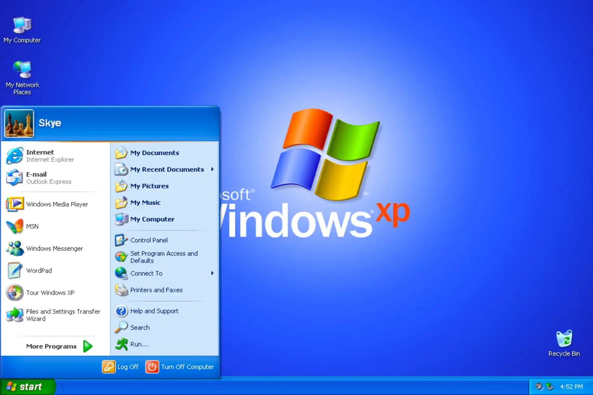El desarrollo de Windows XP parte desde la forma de Windows Neptune y Windows Odyssey. Windows XP fue desarrollado desde diciembre de 2000 hasta agosto de 2001. Windows XP fue lanzado el 25 de octubre de 2001. Durante la década de 1990, Microsoft producía dos líneas separadas de sistemas operativos. Una línea estaba dirigida a las computadoras domésticas basada en un núcleo MS-DOS y representada por Windows 95, Windows 98 y Windows Me, mientras que la otra, basada en un núcleo "NT" y representada por Windows NT y Windows 2000, estaba pensada para el mercado corporativo y empresarial e incluía versiones especiales para servidores. Windows XP implicó la fusión de ambas líneas en un sistema operativo único basado enteramente en la arquitectura NT y contando con la funcionalidad y compatibilidad de la línea doméstica; con él, se eliminó definitivamente el lastre de seguridad y estabilidad que involucraba llevar el código del ya obsoleto MS-DOS junto con el sistema operativo.
2009: Windows 7

Windows 7 es una versión descontinuada de Microsoft Windows, línea de sistemas operativos producida por Microsoft Corporation. Se lanzó en octubre de 2009. Esta versión estaba diseñada para uso en PC, incluyendo equipos de escritorio en hogares y oficinas, equipos portátiles, tabletas, netbooks y equipos multimedia.
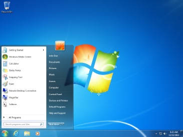El desarrollo de Windows 7 se completó el 22 de julio de 2009, siendo entonces confirmada su fecha de venta oficial para el 22 de octubre de 2009 junto a su equivalente para servidores Windows Server 2008 R2. En febrero de 2018, tenía una cuota de mercado de 41,51 %, y fue superado por Windows 10 que ya tenía un 43,95 % de la cuota de mercado. A diferencia del gran salto arquitectónico y de características que sufrió su antecesor Windows Vista con respecto a Windows XP, Windows 7 fue concebido como una actualización incremental y focalizada de Vista y su núcleo NT 6.0, lo que permitió mantener cierto grado de compatibilidad con aplicaciones y hardware en los que este ya era compatible.
2015: Windows 10
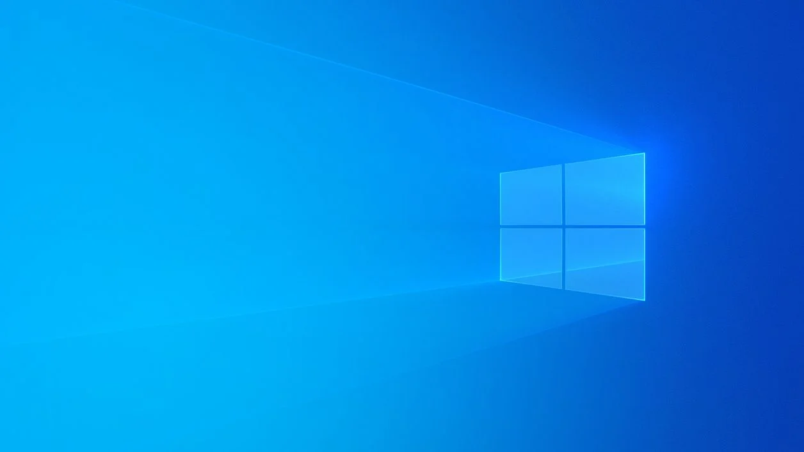Windows 10 es un sistema operativo desarrollado por Microsoft como parte de la familia de sistemas operativos Windows NT. Fue dado a conocer oficialmente en septiembre de 2014, seguido por una breve presentación de demostración en la conferencia Build 2014. Entró en fase beta de prueba en octubre de 2014 y fue lanzado al público en general el 29 de julio de 2015. ara animar su adopción, Microsoft anunció su descarga gratuita por un año desde su fecha de lanzamiento, para los usuarios que contasen con copias genuinas de Windows 7 (SP1) o Windows 8.1 Update. En julio de 2015 se habilitó una herramienta que permitía reservar esta actualización; dicha herramienta notificaba a cada usuario el momento en el que estaría lista la descarga de la actualización para su dispositivo, para así instalar la compilación 10240, la primera versión estable liberada. Los participantes en el programa Windows Insider podían recibir una licencia de Windows 10, pero con ciertas condiciones, entre ellas que su sistema operativo instalado (7, 8, u 8.1) fuese legítimo.
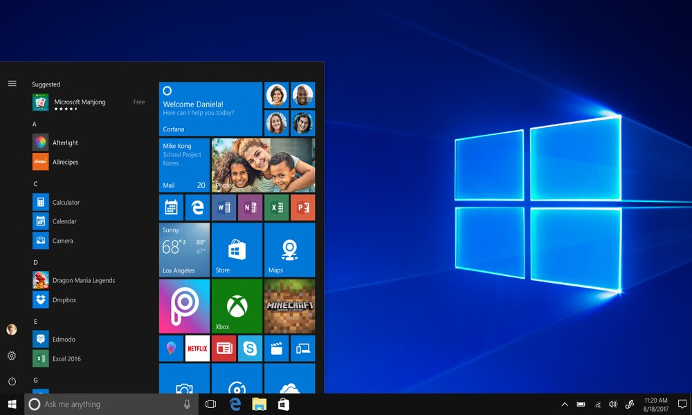Esta edición introdujo una arquitectura de aplicaciones «universales». Desarrolladas con la interfaz Continuum y, posteriormente, con la interfaz Fluent Design, estas aplicaciones pueden ser diseñadas para ejecutarse en todas las familias de productos de Microsoft con un código casi idéntico (incluyendo computadoras personales, tabletas, teléfonos inteligentes, sistemas integrados, Xbox One, Surface Hub y HoloLens). La interfaz de usuario fue revisada para realizar transiciones entre una interfaz orientada al ratón y una interfaz orientada a la pantalla táctil basadas en dispositivos de entrada disponibles (particularmente en tabletas). Ambas interfaces incluyen un menú Inicio actualizado que comprende un diseño mezclado de Windows 7 con el diseño metro de Windows 8. También se introduce la Vista de Tareas, un sistema de escritorio virtual, el navegador web Microsoft Edge y otras aplicaciones nuevas o actualizadas, un soporte integrado para iniciar sesión a través de huella digital o reconocimiento facial llamado Windows Hello, nuevas características de seguridad para entornos empresariales, DirectX 12 y WDDM 2.0 para mejorar las capacidades gráficas del sistema operativo para los videojuegos.
2021: Windows 11
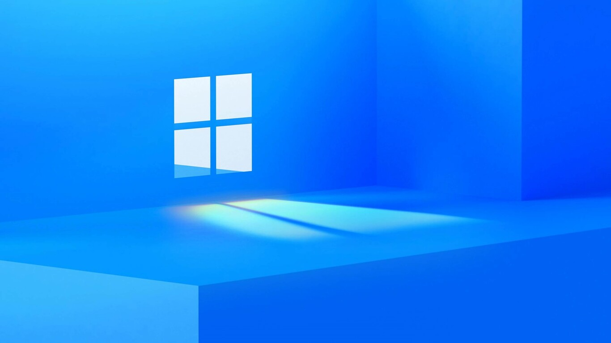indows 11 es el nombre de la versión más reciente del sistema operativo Windows desarrollado por Microsoft, además de ser el sucesor de la anterior versión del sistema operativo, Windows 10, lanzado en 2015. Fue lanzado oficialmente el 5 de octubre de 2021, como una actualización gratuita a través de Windows Update de Windows 10 para aquellos equipos que cumplan con ciertas especificaciones técnicas compatibles del nuevo sistema operativo. Microsoft promovió que Windows 11 habría mejorado el rendimiento y la facilidad de uso sobre Windows 10. Cuenta con cambios importantes en el Shell de Windows influenciados por el cancelado Windows 10X, incluido un menú Inicio rediseñado, el reemplazo de sus iconos dinámicos (Live Tiles) con un panel separado llamado «Widgets» con noticias e intereses, la capacidad de crear conjuntos de ventanas en mosaico que se pueden minimizar y restaurar desde la barra de tareas como grupo, y las nuevas tecnologías de juego heredadas de Xbox Series X y Series S, como Auto HDR y DirectStorage en hardware compatible.
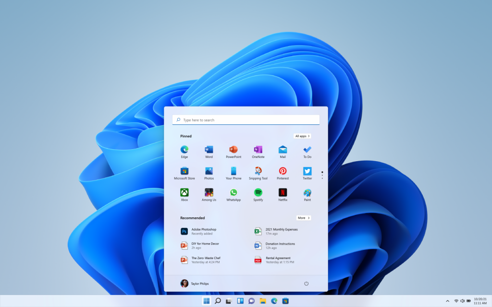Después del lanzamiento de Windows 10, Microsoft mencionó que sería la última versión de Windows. Esto debido a que el sistema operativo sería considerado como un servicio, con nuevas compilaciones, que son actualizaciones que mejoran aspectos estéticos y de funcionamiento del sistema. Sin embargo, la especulación de una nueva versión o un rediseño de Windows surgió en enero de 2021, después de que Microsoft publicara una lista de trabajos que se refería a un "amplio rejuvenecimiento visual de Windows". Se informó que una actualización visual para Windows, desarrollada bajo el nombre en clave "Sun Valley", se configuró para volver a diseñar la interfaz de usuario del sistema.